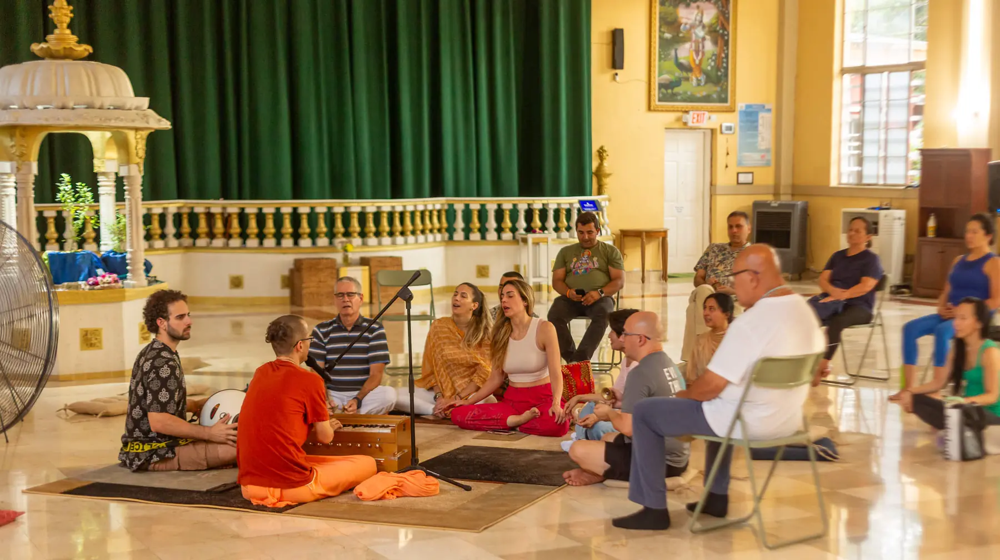

If you've walked past our studio on Virginia Street on a Tuesday evening and heard voices rising and falling together — that's Kirtan. And if you've never heard of it before, you're not alone. Kirtan is one of yoga's oldest and most transformative practices, and it's quietly finding a home in Miami.
Here's everything you need to know before you walk through the door.
So, What Exactly is Kirtan?
Kirtan (pronounced keer-tahn) is devotional call-and-response chanting rooted in the Bhakti yoga tradition of India. A lead singer — called a kirtania — sings a phrase, usually in Sanskrit, and the room sings it back. This continues in waves, sometimes for an hour or more, building gradually in energy before settling into stillness.
It is not a performance. It is not a concert. It is closer to a collective act of surrender — one that tends to dissolve the walls people carry into a room with them.
Where Does Kirtan Come From?
Kirtan has been practiced in India for thousands of years and is central to the Bhakti tradition — the yoga of devotion. In the Bhakti path, love itself is the method. The chanting of sacred names and mantras is understood not as entertainment but as a direct pathway to the heart.
In the West, Kirtan was introduced largely through the Hare Krishna movement in the 1960s and has since spread into yoga studios, festivals, and living rooms across the world — including right here in Coconut Grove.
Do I Need to Be Musical?
Absolutely not. This is the question we hear most often, and the answer is always the same: no musical experience, no singing ability, and no prior knowledge of Sanskrit is required. The only qualification is a willingness to try.
Kirtan is not about hitting the right notes. It is about showing up with an open heart and letting your voice be heard — however it sounds. In fifteen years of leading Kirtan, our teachers have never once heard a wrong note in the room.
Do I Need to Believe in Anything?
No. Kirtan is not a religious requirement and does not ask you to adopt any particular belief system. Many of our Miami students come from Catholic, Jewish, secular, and other backgrounds and find that Kirtan deepens — rather than conflicts with — whatever they already hold.
What it does ask is presence. And in Miami, where life moves fast and the noise is constant, an hour of presence turns out to be exactly what many people didn't know they needed.
What Actually Happens at a Kirtan Evening?
Here's what a typical Kirtan evening at Yoga in the Grove looks like:
- You arrive at 3220 Virginia Street and take a seat — cushions and chairs available
- The kirtania opens with a simple mantra and invites the room to respond
- The chanting builds slowly, moving through several different mantras
- Instruments — harmonium, mrdangam, hand cymbals — carry the sound
- The session closes in stillness and meditation
- A complimentary vegetarian meal (prasadam) is shared together afterward
You are welcome to sing loudly, hum quietly, or simply sit and absorb. There is no wrong way to be in the room.
Why is Kirtan Growing in Miami?
Miami is one of the most diverse, high-energy cities in the world — which also means it can be one of the loneliest. People are craving genuine community, real connection, and practices that address the whole person rather than just the body.
Kirtan offers all of that. It asks nothing of your fitness level, your age, your background, or your beliefs. It simply asks you to show up and add your voice to something larger than yourself. In a city like Miami, that turns out to be quietly radical.
You don't have to be ready. You just have to arrive.
Watch